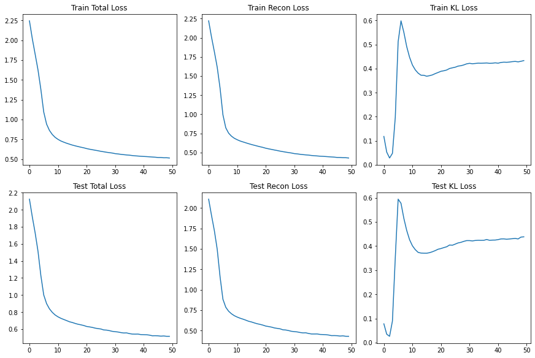
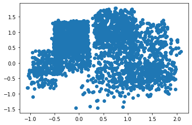
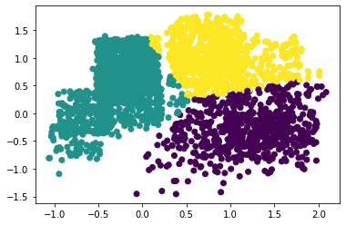
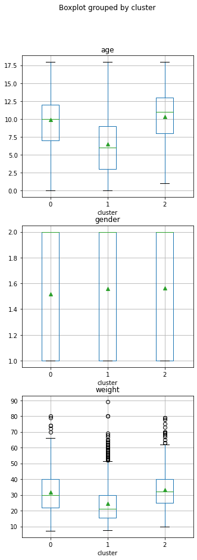
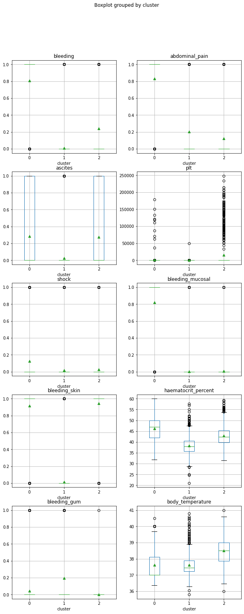

VAE: FC layers¶
Setup¶
[2]:
import numpy as np
import pandas as pd
import torch
import torch.nn as nn
from torch.utils.data import DataLoader
import torch.nn.functional as F
import matplotlib.pyplot as plt
from sklearn.model_selection import train_test_split
from sklearn import preprocessing
from sklearn.cluster import KMeans
SEED = 0
# Set seed
if torch.cuda.is_available():
torch.backends.cudnn.deterministic = True
torch.cuda.manual_seed_all(SEED)
torch.manual_seed(SEED)
np.random.seed(SEED)
# Use GPU if available
GPU = True
if GPU:
device = torch.device("cuda" if torch.cuda.is_available() else "cpu")
else:
device = torch.device("cpu")
print(f'Using {device}')
Using cpu
[15]:
# Hyperparameters
num_epochs = 50
learning_rate = 0.0001
batch_size = 16
latent_dim = 2
beta = 0.2
# Additional parameters
input_size = 10
h_dim = 5
Data loading¶
[16]:
df = pd.read_csv('dengue.csv')
data=["bleeding", "plt", "shock", "haematocrit_percent",
"bleeding_gum", "abdominal_pain", "ascites",
"bleeding_mucosal", "bleeding_skin", "body_temperature"]
info = ["date", "age", "gender", "weight"]
train, test = train_test_split(df, test_size=0.2, random_state=SEED)
train_data = train[data]
test_data = test[data]
train_info = train[info]
test_info = test[info]
scaler = preprocessing.MinMaxScaler().fit(train_data)
train_scaled = scaler.transform(train_data.to_numpy())
test_scaled = scaler.transform(test_data.to_numpy())
loader_train = DataLoader(train_scaled, batch_size, shuffle=True)
loader_test = DataLoader(test_scaled, batch_size, shuffle=False)
Model¶

Fig.1 - VAE Diagram (with a Guassian prior), taken from 1.
[28]:
class VAE(nn.Module):
def __init__(self, latent_dim):
super(VAE, self).__init__()
self.encoder = nn.Sequential(
nn.Linear(input_size, h_dim),
#nn.ReLU(),
nn.LeakyReLU(0.2),
nn.Linear(h_dim, 2 * latent_dim)
)
self.decoder = nn.Sequential(
nn.Linear(latent_dim, h_dim),
nn.ReLU(),
nn.Linear(h_dim, input_size),
nn.Sigmoid()
)
def encode(self, x):
x = self.encoder(x)
mu, logvar = torch.chunk(x, 2, dim=1)
return mu, logvar
def reparametrize(self, mu, logvar):
std = torch.exp(0.5 * logvar)
eps = torch.rand_like(std)
return mu + eps * std
def decode(self, z):
return self.decoder(z)
def forward(self, x):
x = x.view(-1, input_size)
mu, logvar = self.encode(x)
z = self.reparametrize(mu, logvar)
return self.decode(z), mu, logvar
[29]:
model = VAE(latent_dim).to(device)
params = sum(p.numel() for p in model.parameters() if p.requires_grad)
print("Total number of parameters is: {}".format(params))
print(model)
# optimizer
optimizer = torch.optim.Adam(model.parameters(), lr=learning_rate)
Total number of parameters is: 154
VAE(
(encoder): Sequential(
(0): Linear(in_features=10, out_features=5, bias=True)
(1): LeakyReLU(negative_slope=0.2)
(2): Linear(in_features=5, out_features=4, bias=True)
)
(decoder): Sequential(
(0): Linear(in_features=2, out_features=5, bias=True)
(1): ReLU()
(2): Linear(in_features=5, out_features=10, bias=True)
(3): Sigmoid()
)
)
Training¶
Loss function:
\[\mathcal{L}=\mathbb{E}_{q_\phi(z \mid X)}[\log p_\theta(X \mid z)]-\beta D_{K L}[q_\phi(z \mid X) \| p_\theta(z)]\]
[30]:
def loss_function_VAE(recon_x, x, mu, logvar, beta):
recon_loss = F.mse_loss(recon_x, x, reduction='mean') * input_size
KLD = torch.mean(-0.5 * torch.sum(1 + logvar - mu.pow(2) - logvar.exp(), dim=1), dim=0)
return recon_loss + beta * KLD, recon_loss, KLD
model.train()
train_losses, train_recon, train_KLD = [], [], []
test_losses, test_recon, test_KLD = [], [], []
for epoch in range(num_epochs):
train_loss, recon_loss, KL_loss = 0, 0, 0
# TRAIN
for i, data in enumerate(loader_train):
model.train()
data = data.to(device).float()
out, mu, logvar = model(data)
loss, recon, KLD = loss_function_VAE(out, data, mu, logvar, beta)
optimizer.zero_grad()
loss.backward()
optimizer.step()
train_loss += loss.item()
recon_loss += recon
KL_loss += KLD
# DISPLAY/SAVE TRAINING LOSSES
print("TRAIN: \tEpoch {0:2}, Total loss:{1:8.4f}, Recon loss:{2:8.4f}, KL loss:{3:8.4f}".format(
epoch,
train_loss / len(loader_train),
recon_loss / len(loader_train),
KL_loss / len(loader_train))
)
train_losses.append(train_loss / len(loader_train))
train_KLD.append(KL_loss / len(loader_train))
train_recon.append(recon_loss / len(loader_train))
# DISPLAY/SAVE TESTING LOSSES
model.eval()
with torch.no_grad():
test_loss, test_recon_loss, test_KL_loss = 0, 0, 0
for i, data in enumerate(loader_test):
data = data.to(device).float()
out, mu, logvar = model(data)
total, recon, KLD = loss_function_VAE(out, data, mu, logvar, beta)
test_loss += total
test_KL_loss += KLD
test_recon_loss += recon
print("TEST: \tEpoch {0:2}, Total loss:{1:8.4f}, Recon loss:{2:8.4f}, KL loss:{3:8.4f}".format(
epoch,
test_loss / len(loader_test),
test_recon_loss / len(loader_test),
test_KL_loss / len(loader_test))
)
test_losses.append(test_loss / len(loader_test))
test_KLD.append(test_KL_loss / len(loader_test))
test_recon.append(test_recon_loss / len(loader_test))
TRAIN: Epoch 0, Total loss: 2.2438, Recon loss: 2.2203, KL loss: 0.1179
TEST: Epoch 0, Total loss: 2.1247, Recon loss: 2.1091, KL loss: 0.0779
TRAIN: Epoch 1, Total loss: 2.0195, Recon loss: 2.0090, KL loss: 0.0526
TEST: Epoch 1, Total loss: 1.9177, Recon loss: 1.9107, KL loss: 0.0349
TRAIN: Epoch 2, Total loss: 1.8233, Recon loss: 1.8177, KL loss: 0.0281
TEST: Epoch 2, Total loss: 1.7289, Recon loss: 1.7237, KL loss: 0.0262
TRAIN: Epoch 3, Total loss: 1.6246, Recon loss: 1.6151, KL loss: 0.0474
TEST: Epoch 3, Total loss: 1.5130, Recon loss: 1.4952, KL loss: 0.0894
TRAIN: Epoch 4, Total loss: 1.3799, Recon loss: 1.3405, KL loss: 0.1974
TEST: Epoch 4, Total loss: 1.2280, Recon loss: 1.1576, KL loss: 0.3520
TRAIN: Epoch 5, Total loss: 1.0960, Recon loss: 0.9936, KL loss: 0.5119
TEST: Epoch 5, Total loss: 1.0017, Recon loss: 0.8828, KL loss: 0.5945
TRAIN: Epoch 6, Total loss: 0.9432, Recon loss: 0.8235, KL loss: 0.5987
TEST: Epoch 6, Total loss: 0.8998, Recon loss: 0.7844, KL loss: 0.5772
TRAIN: Epoch 7, Total loss: 0.8636, Recon loss: 0.7535, KL loss: 0.5510
TEST: Epoch 7, Total loss: 0.8386, Recon loss: 0.7357, KL loss: 0.5148
TRAIN: Epoch 8, Total loss: 0.8121, Recon loss: 0.7138, KL loss: 0.4915
TEST: Epoch 8, Total loss: 0.7973, Recon loss: 0.7043, KL loss: 0.4647
TRAIN: Epoch 9, Total loss: 0.7761, Recon loss: 0.6866, KL loss: 0.4473
TEST: Epoch 9, Total loss: 0.7663, Recon loss: 0.6811, KL loss: 0.4264
TRAIN: Epoch 10, Total loss: 0.7508, Recon loss: 0.6679, KL loss: 0.4149
TEST: Epoch 10, Total loss: 0.7446, Recon loss: 0.6643, KL loss: 0.4012
TRAIN: Epoch 11, Total loss: 0.7305, Recon loss: 0.6515, KL loss: 0.3948
TEST: Epoch 11, Total loss: 0.7275, Recon loss: 0.6505, KL loss: 0.3852
TRAIN: Epoch 12, Total loss: 0.7157, Recon loss: 0.6395, KL loss: 0.3811
TEST: Epoch 12, Total loss: 0.7139, Recon loss: 0.6391, KL loss: 0.3739
TRAIN: Epoch 13, Total loss: 0.7023, Recon loss: 0.6278, KL loss: 0.3725
TEST: Epoch 13, Total loss: 0.7008, Recon loss: 0.6265, KL loss: 0.3711
TRAIN: Epoch 14, Total loss: 0.6904, Recon loss: 0.6159, KL loss: 0.3722
TEST: Epoch 14, Total loss: 0.6869, Recon loss: 0.6128, KL loss: 0.3705
TRAIN: Epoch 15, Total loss: 0.6789, Recon loss: 0.6053, KL loss: 0.3682
TEST: Epoch 15, Total loss: 0.6784, Recon loss: 0.6043, KL loss: 0.3704
TRAIN: Epoch 16, Total loss: 0.6695, Recon loss: 0.5954, KL loss: 0.3706
TEST: Epoch 16, Total loss: 0.6672, Recon loss: 0.5927, KL loss: 0.3727
TRAIN: Epoch 17, Total loss: 0.6605, Recon loss: 0.5857, KL loss: 0.3738
TEST: Epoch 17, Total loss: 0.6579, Recon loss: 0.5826, KL loss: 0.3765
TRAIN: Epoch 18, Total loss: 0.6520, Recon loss: 0.5761, KL loss: 0.3792
TEST: Epoch 18, Total loss: 0.6510, Recon loss: 0.5747, KL loss: 0.3813
TRAIN: Epoch 19, Total loss: 0.6445, Recon loss: 0.5677, KL loss: 0.3839
TEST: Epoch 19, Total loss: 0.6431, Recon loss: 0.5657, KL loss: 0.3870
TRAIN: Epoch 20, Total loss: 0.6347, Recon loss: 0.5569, KL loss: 0.3889
TEST: Epoch 20, Total loss: 0.6319, Recon loss: 0.5539, KL loss: 0.3898
TRAIN: Epoch 21, Total loss: 0.6271, Recon loss: 0.5489, KL loss: 0.3910
TEST: Epoch 21, Total loss: 0.6268, Recon loss: 0.5480, KL loss: 0.3937
TRAIN: Epoch 22, Total loss: 0.6205, Recon loss: 0.5417, KL loss: 0.3942
TEST: Epoch 22, Total loss: 0.6207, Recon loss: 0.5412, KL loss: 0.3972
TRAIN: Epoch 23, Total loss: 0.6139, Recon loss: 0.5338, KL loss: 0.4005
TEST: Epoch 23, Total loss: 0.6122, Recon loss: 0.5313, KL loss: 0.4044
TRAIN: Epoch 24, Total loss: 0.6077, Recon loss: 0.5270, KL loss: 0.4033
TEST: Epoch 24, Total loss: 0.6066, Recon loss: 0.5258, KL loss: 0.4036
TRAIN: Epoch 25, Total loss: 0.6001, Recon loss: 0.5189, KL loss: 0.4059
TEST: Epoch 25, Total loss: 0.6020, Recon loss: 0.5204, KL loss: 0.4083
TRAIN: Epoch 26, Total loss: 0.5944, Recon loss: 0.5123, KL loss: 0.4104
TEST: Epoch 26, Total loss: 0.5910, Recon loss: 0.5084, KL loss: 0.4131
TRAIN: Epoch 27, Total loss: 0.5884, Recon loss: 0.5060, KL loss: 0.4121
TEST: Epoch 27, Total loss: 0.5889, Recon loss: 0.5058, KL loss: 0.4156
TRAIN: Epoch 28, Total loss: 0.5831, Recon loss: 0.5001, KL loss: 0.4154
TEST: Epoch 28, Total loss: 0.5827, Recon loss: 0.4988, KL loss: 0.4196
TRAIN: Epoch 29, Total loss: 0.5784, Recon loss: 0.4944, KL loss: 0.4199
TEST: Epoch 29, Total loss: 0.5745, Recon loss: 0.4900, KL loss: 0.4228
TRAIN: Epoch 30, Total loss: 0.5709, Recon loss: 0.4865, KL loss: 0.4219
TEST: Epoch 30, Total loss: 0.5706, Recon loss: 0.4860, KL loss: 0.4227
TRAIN: Epoch 31, Total loss: 0.5672, Recon loss: 0.4831, KL loss: 0.4202
TEST: Epoch 31, Total loss: 0.5667, Recon loss: 0.4824, KL loss: 0.4214
TRAIN: Epoch 32, Total loss: 0.5621, Recon loss: 0.4779, KL loss: 0.4214
TEST: Epoch 32, Total loss: 0.5598, Recon loss: 0.4752, KL loss: 0.4233
TRAIN: Epoch 33, Total loss: 0.5580, Recon loss: 0.4735, KL loss: 0.4226
TEST: Epoch 33, Total loss: 0.5554, Recon loss: 0.4706, KL loss: 0.4240
TRAIN: Epoch 34, Total loss: 0.5542, Recon loss: 0.4698, KL loss: 0.4223
TEST: Epoch 34, Total loss: 0.5563, Recon loss: 0.4716, KL loss: 0.4237
TRAIN: Epoch 35, Total loss: 0.5517, Recon loss: 0.4671, KL loss: 0.4227
TEST: Epoch 35, Total loss: 0.5480, Recon loss: 0.4632, KL loss: 0.4239
TRAIN: Epoch 36, Total loss: 0.5469, Recon loss: 0.4622, KL loss: 0.4234
TEST: Epoch 36, Total loss: 0.5426, Recon loss: 0.4572, KL loss: 0.4273
TRAIN: Epoch 37, Total loss: 0.5433, Recon loss: 0.4589, KL loss: 0.4219
TEST: Epoch 37, Total loss: 0.5418, Recon loss: 0.4570, KL loss: 0.4240
TRAIN: Epoch 38, Total loss: 0.5406, Recon loss: 0.4561, KL loss: 0.4225
TEST: Epoch 38, Total loss: 0.5424, Recon loss: 0.4575, KL loss: 0.4248
TRAIN: Epoch 39, Total loss: 0.5376, Recon loss: 0.4528, KL loss: 0.4240
TEST: Epoch 39, Total loss: 0.5365, Recon loss: 0.4515, KL loss: 0.4250
TRAIN: Epoch 40, Total loss: 0.5355, Recon loss: 0.4510, KL loss: 0.4224
TEST: Epoch 40, Total loss: 0.5354, Recon loss: 0.4501, KL loss: 0.4268
TRAIN: Epoch 41, Total loss: 0.5335, Recon loss: 0.4484, KL loss: 0.4256
TEST: Epoch 41, Total loss: 0.5344, Recon loss: 0.4485, KL loss: 0.4296
TRAIN: Epoch 42, Total loss: 0.5309, Recon loss: 0.4455, KL loss: 0.4268
TEST: Epoch 42, Total loss: 0.5303, Recon loss: 0.4443, KL loss: 0.4298
TRAIN: Epoch 43, Total loss: 0.5282, Recon loss: 0.4429, KL loss: 0.4263
TEST: Epoch 43, Total loss: 0.5225, Recon loss: 0.4369, KL loss: 0.4284
TRAIN: Epoch 44, Total loss: 0.5261, Recon loss: 0.4406, KL loss: 0.4272
TEST: Epoch 44, Total loss: 0.5234, Recon loss: 0.4375, KL loss: 0.4295
TRAIN: Epoch 45, Total loss: 0.5223, Recon loss: 0.4365, KL loss: 0.4290
TEST: Epoch 45, Total loss: 0.5222, Recon loss: 0.4360, KL loss: 0.4306
TRAIN: Epoch 46, Total loss: 0.5220, Recon loss: 0.4360, KL loss: 0.4299
TEST: Epoch 46, Total loss: 0.5180, Recon loss: 0.4317, KL loss: 0.4317
TRAIN: Epoch 47, Total loss: 0.5189, Recon loss: 0.4332, KL loss: 0.4281
TEST: Epoch 47, Total loss: 0.5203, Recon loss: 0.4344, KL loss: 0.4296
TRAIN: Epoch 48, Total loss: 0.5192, Recon loss: 0.4331, KL loss: 0.4304
TEST: Epoch 48, Total loss: 0.5162, Recon loss: 0.4288, KL loss: 0.4373
TRAIN: Epoch 49, Total loss: 0.5160, Recon loss: 0.4294, KL loss: 0.4333
TEST: Epoch 49, Total loss: 0.5162, Recon loss: 0.4286, KL loss: 0.4383
[31]:
import matplotlib
import matplotlib.pyplot as plt
import matplotlib.gridspec as gridspec
print("x-axis: epochs; y-axis: loss; beta={}".format(beta))
fig1 = plt.figure(constrained_layout=True,figsize=(12,8))
spec1 = gridspec.GridSpec(ncols=3, nrows=2, figure=fig1)
f1_ax11 = fig1.add_subplot(spec1[0, 0])
f1_ax11.set_title('Train Total Loss')
f1_ax11.plot(range(num_epochs), train_losses)
f1_ax12 = fig1.add_subplot(spec1[0, 1])
f1_ax12.set_title('Train Recon Loss')
f1_ax12.plot(range(num_epochs), train_recon)
f1_ax13 = fig1.add_subplot(spec1[0, 2])
f1_ax13.set_title('Train KL Loss')
f1_ax13.plot(range(num_epochs), train_KLD)
f1_ax21 = fig1.add_subplot(spec1[1, 0])
f1_ax21.set_title('Test Total Loss')
f1_ax21.plot(range(num_epochs), test_losses)
f1_ax22 = fig1.add_subplot(spec1[1, 1])
f1_ax22.set_title('Test Recon Loss')
f1_ax22.plot(range(num_epochs), test_recon)
f1_ax23 = fig1.add_subplot(spec1[1, 2])
f1_ax23.set_title('Test KL Loss')
f1_ax23.plot(range(num_epochs), test_KLD)
x-axis: epochs; y-axis: loss; beta=0.2
[31]:
[<matplotlib.lines.Line2D at 0x145095db048>]

[32]:
model.eval()
z = []
with torch.no_grad():
for i, data in enumerate(loader_test):
mu, logvar = model.encode(data.to(device).float())
z.append(model.reparametrize(mu, logvar))
encoded_inputs = torch.cat(z, dim=0).to("cpu").numpy()
points_x = encoded_inputs[:, 0]
points_y = encoded_inputs[:, 1]
[33]:
plt.scatter(points_x, points_y)
plt.show()

[37]:
cluster = KMeans(n_clusters=3, random_state=SEED).fit_predict(encoded_inputs)
plt.scatter(points_x, points_y, c=cluster)
plt.show()

[38]:
test_info['cluster'] = cluster
_, ax0 = plt.subplots(3, 1, figsize=(5, 15))
test_info.boxplot('age','cluster', ax=ax0[0], showmeans=True)
test_info.boxplot('gender','cluster', ax=ax0[1], showmeans=True)
test_info.boxplot('weight','cluster', ax=ax0[2], showmeans=True)
plt.show()
c:\users\oliver\appdata\local\programs\python\python37\lib\site-packages\ipykernel_launcher.py:1: SettingWithCopyWarning:
A value is trying to be set on a copy of a slice from a DataFrame.
Try using .loc[row_indexer,col_indexer] = value instead
See the caveats in the documentation: https://pandas.pydata.org/pandas-docs/stable/user_guide/indexing.html#returning-a-view-versus-a-copy
"""Entry point for launching an IPython kernel.

[39]:
test_data['cluster'] = cluster
_, ax1 = plt.subplots(5, 2, figsize=(10, 25))
features = ["bleeding", "plt", "shock", "haematocrit_percent", "bleeding_gum",
"abdominal_pain", "ascites", "bleeding_mucosal", "bleeding_skin",
"body_temperature"]
for i, feat in enumerate(features):
test_data.boxplot(feat,'cluster', ax=ax1[i%5][i%2], showmeans=True)
plt.show()
c:\users\oliver\appdata\local\programs\python\python37\lib\site-packages\ipykernel_launcher.py:1: SettingWithCopyWarning:
A value is trying to be set on a copy of a slice from a DataFrame.
Try using .loc[row_indexer,col_indexer] = value instead
See the caveats in the documentation: https://pandas.pydata.org/pandas-docs/stable/user_guide/indexing.html#returning-a-view-versus-a-copy
"""Entry point for launching an IPython kernel.
